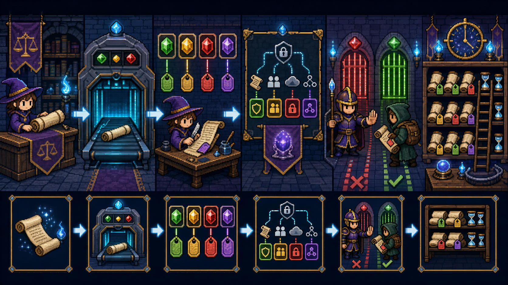
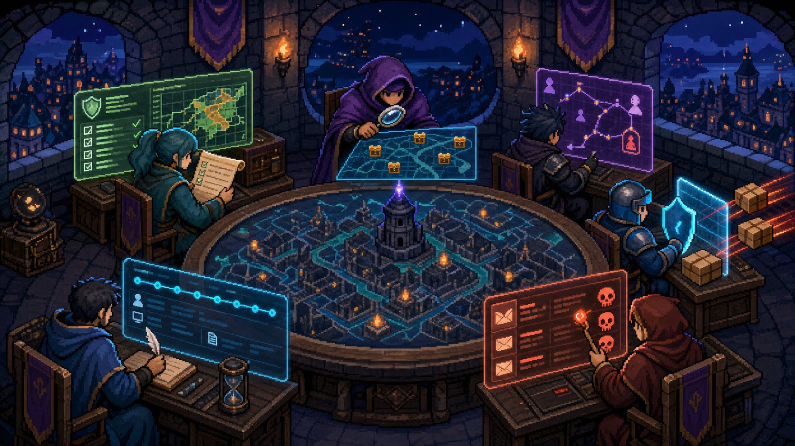
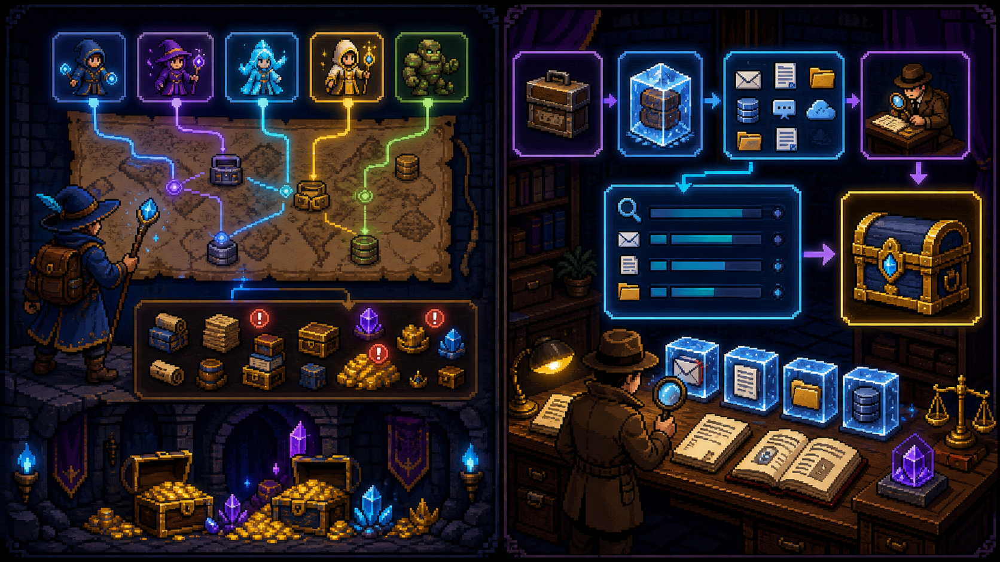
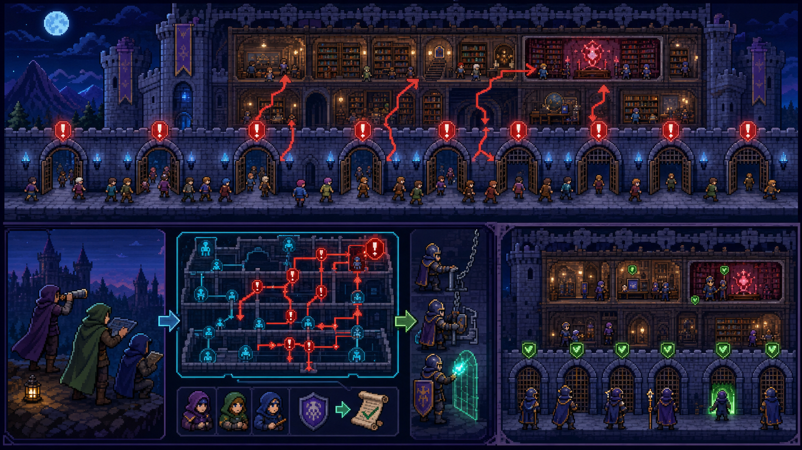

Conhecer
Data Explorer e Activity Explorer ajudam a entender dados e ações.
Uma campanha RPG para descobrir dados, definir regras, vigiar riscos e impedir que a IA ou o compartilhamento ampliem acessos indevidos.
Conclua as seis missões do domínio.
Veja o território inteiro antes de escolher a ferramenta.
Microsoft Purview reúne recursos para conhecer, proteger e governar dados. Ele não é um único feitiço: é a guilda que coordena classificação, DLP, ciclo de vida, riscos, conformidade e investigação.
Data Explorer e Activity Explorer ajudam a entender dados e ações.
Information Protection, rótulos e DLP aplicam controles.
Data Lifecycle Management define retenção e descarte.
Insider Risk, Communication Compliance e eDiscovery trazem evidências.
⚡ SÊNIOR A pergunta de prova normalmente descreve um resultado. Primeiro identifique se precisa descobrir, proteger, monitorar ou investigar; só depois escolha o recurso.
Dê identidade ao dado e decida como ele pode viajar e por quanto tempo vive.

A classificação reconhece o conteúdo. O sensitivity label marca e pode proteger. A DLP vigia ações arriscadas, como enviar um cartão de crédito para fora. A retenção decide quando manter ou excluir.
| Controle | Pergunta respondida |
|---|---|
| Classificação | Que tipo de dado é este? |
| Sensitivity label | Quão sensível é e qual proteção acompanha? |
| DLP | Esta ação com o dado deve ser permitida, alertada ou bloqueada? |
| Retention | Por quanto tempo manter ou quando excluir? |
⚡ SÊNIOR Rótulo de confidencialidade acompanha a sensibilidade; rótulo/política de retenção governa o ciclo de vida. DLP avalia conteúdo, contexto e ação.
Entenda por que governar acesso é governar o que a IA pode encontrar.
O Copilot usa o Microsoft Graph para fundamentar respostas no contexto organizacional, respeitando as permissões do usuário. Se alguém já acessa conteúdo demais, a IA pode tornar esse excesso mais fácil de encontrar.
⚡ SÊNIOR Purview protege dados, Defender ajuda a proteger contra ameaças e controles do Microsoft 365 limitam acesso. IA responsável adiciona princípios como justiça, confiabilidade, privacidade, inclusão, transparência e responsabilidade.
Escolha o especialista correto para cada sinal.

Avaliações, pontuação de conformidade e ações de melhoria.
Correlaciona sinais para identificar atividades internas potencialmente arriscadas.
Detecta comunicações que podem violar políticas.
Investiga correspondências e ações geradas por políticas DLP.
Mostra atividades realizadas com conteúdo rotulado ou sensível.
Ajuda a localizar e compreender conteúdo sensível ou rotulado.
⚡ SÊNIOR Postura é Compliance Manager; comunicação inadequada é Communication Compliance; comportamento interno arriscado é Insider Risk; histórico de atividades é Activity Explorer.
Mapeie riscos da IA ou procure evidências: são missões diferentes.

DSPM for AI dá visibilidade sobre uso de IA e riscos de dados, ajudando a descobrir e proteger informações. eDiscovery dá suporte a investigações e processos jurídicos; a pesquisa de conteúdo localiza material relevante.
| Necessidade | Ferramenta |
|---|---|
| Compreender exposição e uso de dados pela IA | DSPM for AI |
| Pesquisar emails, arquivos e outros conteúdos | Content search |
| Preservar, coletar, revisar e gerenciar evidências | eDiscovery |
⚡ SÊNIOR Uma busca pode ser parte da investigação, mas eDiscovery abrange o fluxo de caso e evidência. DSPM for AI tem foco em postura e riscos de dados associados à IA.
Descubra quem atravessa cada portão e reduza o acesso excessivo.

Oversharing ocorre quando conteúdo fica acessível a mais pessoas do que deveria. Relatórios de governança de acesso a dados ajudam a encontrar exposição. O SharePoint Advanced Management oferece controles como restricted access control para limitar quem pode acessar sites.
⚡ SÊNIOR Restricted access control restringe o acesso ao site a grupos específicos, mas não concede acesso por si só: o usuário ainda precisa da permissão normal no conteúdo.
Você é o comandante: escolha a ferramenta antes que o risco chegue ao castelo.
Seis decisões em português para consolidar o mapa mental.